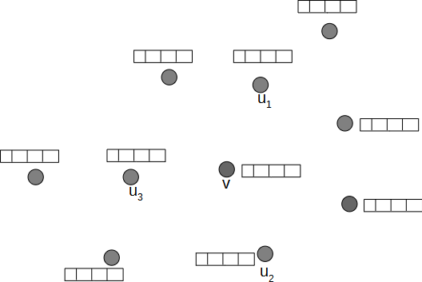

Graph Representation Learning applied to Transaction Networks
![]()
Graph Neural Networks

\[\vec{h}_v^{(1)} = ??\]
Graph Neural Networks

\[\vec{h}_v^{(1)} = f(\vec{h}_v^{(0)}, \{ \vec{h}_u^{(0)} | u \in N(v)\})\]
Graph Neural Networks

\[\vec{h}_v^{(1)} = f(\vec{h}_v^{(0)}, \{ \vec{h}_u^{(0)} | u \in N(v)\}) = \]
\[\sigma\left( \sum\limits_{u \in N(v)} \frac{W^{(0)} \vec{h}_u^{(0)} }{|N(v)|} + B^{(0)} \vec{h}_v^{(0)} \right)\]
Graph Neural Networks

\[\vec{h}_v^{(1)} = \sigma\left( \sum\limits_{u \in N(v)} \frac{W^{(0)} \vec{h}_u^{(0)} }{|N(v)|} + B^{(0)} \vec{h}_v^{(0)} \right)\]
Graph Neural Networks

\[\vec{h}_v^{(1)} = \sigma\left( \sum\limits_{u \in N(v)} \frac{W^{(0)} \vec{h}_u^{(0)} }{|N(v)|} + B^{(0)} \vec{h}_v^{(0)} \right)\]
Graph Neural Networks

\[\vec{h}_v^{(2)} = \sigma\left( \sum\limits_{u \in N(v)} \frac{W^{(1)} \vec{h}_u^{(1)} }{|N(v)|} + B^{(1)} \vec{h}_v^{(1)} \right)\]
Introduction
\[\longrightarrow\]

\(\iff\) (Directed Stochastic) Link Prediction!
Autoencoders

Variational Autoencoders

Variational Graph Autoencoders

Variational Graph Autoencoders

\[\hat{p}(e_{ij}) = \text{Model}(\vec{h}^{(0)}_i, \vec{h}^{(0)}_j)\]
\[\hat{p}(e_{ij}) = \text{Model}(\vec{h}^{(0)}_i, \vec{h}^{(0)}_j) = \text{Dec}(\text{Enc}(\vec{h}^{(0)}_i), \text{Enc}(\vec{h}^{(0)}_j))\]
\[\hat{p}(e_{ij}) = \text{Model}(\vec{h}^{(0)}_i, \vec{h}^{(0)}_j) = \text{Dec}(\text{Enc}(\vec{h}^{(0)}_i), \text{Enc}(\vec{h}^{(0)}_j)) = \text{Dec}(\vec{h}^{(L)}_i, \vec{h}^{(L)}_j)\]
\[\begin{split} \hat{p}(e_{ij}) = \text{Model}(\vec{h}^{(0)}_i, \vec{h}^{(0)}_j) &= \text{Dec}(\text{Enc}(\vec{h}^{(0)}_i), \text{Enc}(\vec{h}^{(0)}_j)) = \text{Dec}(\vec{h}^{(L)}_i, \vec{h}^{(L)}_j) \\ &= \begin{cases} \vec{h}^{(L)}_i \cdot \vec{h}^{(L)}_j \\ \vec{h}^{(L)}_i[:l/2] \cdot \vec{h}^{(L)}_j[l/2:] \end{cases} \end{split}\]
Related Works

Related Works

Related Works

Related Works

\[\mathcal{L}(\Theta) = \sum\limits_{e \in {E_{s + n}}} y_e\ln(\hat{p}_{\Theta}(e)) + (1-y_e)\ln(1-\hat{p}_{\Theta}(e))\]
Related Works
Training Set

Test Set

| Metric | Performance |
|---|---|
| ROC -AUC | 0.829 \(\pm\) 0.002 |
| hits@20 | 0.59 \(\pm\) 0.01 |
| AP-AUC | 0.872 \(\pm\) 0.001 |
WHY? Directionality never really tested.
Related Works

Naive Approach
WHY?
Training Set
Test Set(s)


Proposed Framework: MFDLP

Proposed Framework: MFDLP

Proposed Framework: MFDLP